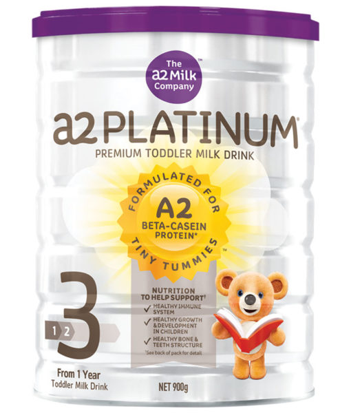

|  | A2白金婴儿奶粉含有a2 beta酪蛋白，不含a1 beta酪蛋白。研究人员发现，a2牛奶比普通牛奶对人体健康更加有益，而且引发的不良反应更少； A2白金婴儿奶粉100%纯天然，比其他奶粉额外配上了OMEGA-3、DHA益生元、铁、钙和维生素D，帮助支持大脑和眼睛发育，促进肠道和免疫系统发育，支持骨骼和牙齿发育。适合第三阶段、1-3岁婴儿。
产品特点：
○ 100%纯天然； ○ 口感浓醇； ○ 营养价值高； ○ 配方均衡。 ○ 产品功能：
○ 帮助支持大脑和眼睛发育； ○ 提供人体多种所需的营养物质； ○ 促进身体各部分机能的健康成长； ○ 促进肠道和免疫系统发育，支持骨骼和牙齿发育。 主要成份：
○ 乳固体 ○ 植物油 ○ 矿物质 ○ 花生四烯酸 ○ 低聚半乳糖 适用人群：
○ 适用于1-3岁婴儿。 使用方法：
○ 将正确量煮开过的凉水倒入奶瓶，加热到喂养温度； ○ 将每勺奶粉用内置的刮平器刮平； ○ 一平勺奶粉请兑50毫升水，盖好奶瓶盖，摇动奶瓶至奶粉完全溶解； ○ 喂养前，把奶液滴在手腕上试温，冲调好马上喂养（不要贮存），喂完后多余奶液请丢弃。 注意事项：
○ 使用时应仔细阅读标签； ○ 产品宜存放至阴凉干燥处，避免阳光直射及高温。 |